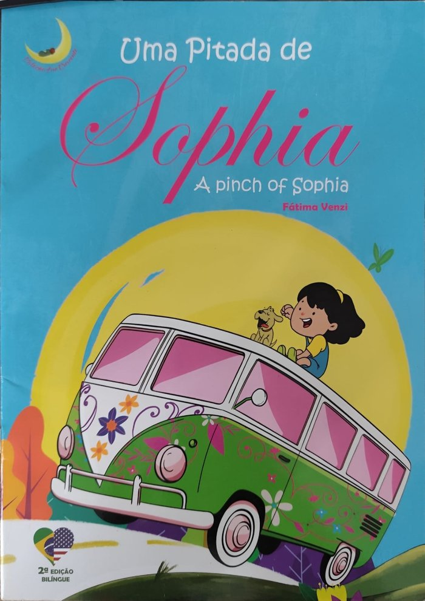

Loja
Conheça os livros da Fátima Venzi. São histórias reais e bilíngues, para crianças da primeira e da segunda infância e também para o público infanto-juvenil.
Uma Pitada de Sophia

Livro da editora Art Letras, com ilustrações de Felipe Reis. Conta a história real da Sophia, uma menina que tem a Síndrome de Treacher Collins, e ensina as crianças a respeitarem as diferenças.
Preço: R$ 40,00
Uma Pitada de Sophia (A Pinch of Sophia)

Segunda edição bilíngue (português e inglês) da história da Sophia, da Coleção Lua Crescente.
Preço: R$ 35,00
Todos os Gatos

Segunda edição bilíngue (português e inglês). O livro fala sobre o cuidado e a proteção aos animais, o respeito à diversidade, a inclusão e a empatia.
Preço: R$ 35,00
O Menino que Decidiu Vencer
![Capa do livro 'O menino que decidiu vencer', de Fátima Venzi. Em um fundo de tons escuros e abstratos, com traços geométricos e pinceladas em diversas cores, aparece a imagem de um menino de cabelos escuros em atitude de oração, com as mãos unidas e os olhos fechados. Ao fundo, vê-se uma composição artística com um rosto humano parcialmente sobreposto, criando um efeito de reflexão e introspecção. O título está destacado ao centro em letras grandes e claras. No canto superior esquerdo, aparece o selo da coleção Lua Crescente, representado por uma lua amarela.](pasta-de-img/Menino-venceu.jpeg)
Da Coleção Lua Crescente, em edição bilíngue (português e espanhol). Uma história real de superação e coragem.
Preço: R$ 35,00
Anna Fulô
![Capa do livro Anna Fulô, de Fátima Venzi. Em um fundo com tons quentes de vermelho e laranja, aparece a ilustração de uma jovem loira de cabelos longos, usando vestido vermelho e piscando um dos olhos. Uma flor de girassol adorna seus cabelos. Ao redor da personagem há elementos coloridos inspirados na fauna e na cultura brasileira, incluindo um tucano, uma arara azul e flores decorativas. O título está em destaque no centro da capa, em letras brancas grandes. No canto superior esquerdo, aparece o selo da coleção Lua Crescente.](pasta-de-img/anna-fulo.jpeg)
Da Coleção Lua Crescente, em edição bilíngue (português e inglês).
Preço: R$ 30,00
Xambi-Xambinho, um Cientista Maluquinho
![Capa do livro Xambi-Xambinho: um cientista maluquinho, de Fátima Venzi. Em um fundo escuro, iluminado por pequenos pontos amarelos que lembram luzes ou partículas brilhantes, aparece uma criança ruiva vestida com jaleco de cientista, segurando um tubo de ensaio. Ao redor dela há frascos e materiais de laboratório. O título está destacado na parte superior em letras amarelas e brancas. No canto superior esquerdo, aparece o selo da coleção Lua Crescente, e na parte inferior consta o crédito das ilustrações de Laura Mocelin.](pasta-de-img/Xambi-xambinho.jpeg)
Da Coleção Lua Crescente, com ilustrações de Laura Mocelin, em edição bilíngue (português e espanhol).
Preço: R$ 40,00
Davi e o Lixo no Mar
![Capa do livro Davi e o lixo no mar, de Fátima Venzi. Em fundo com tons suaves de azul e verde que remetem ao ambiente marinho, aparece uma criança de cabelos cacheados mergulhando de cabeça para baixo na água. Linhas onduladas sugerem algas ou correntes marinhas. O título está centralizado, com “Davi” em letras vermelhas grandes e o restante em escrita cursiva preta. No canto inferior esquerdo, há uma garrafa parcialmente submersa, reforçando o tema da poluição marinha. No canto superior esquerdo, aparece o selo da coleção Lua Crescente.](/pasta-de-img/davi-e-o-lixo-no-mar.jpeg)
Da Coleção Lua Crescente, em edição bilíngue (português e inglês). Fala sobre a poluição do mar e o cuidado com a natureza.
Preço: R$ 38,00